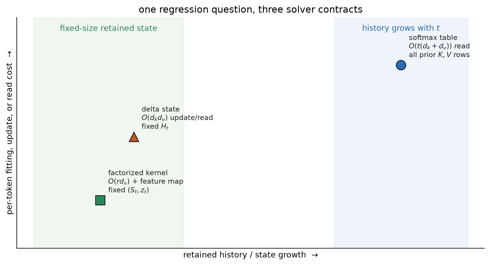

Chapter 14 kept visible evidence in a growing key–value table. This interlude holds the regression question fixed and changes the forward-pass solver. The comparison reveals what each solver retains, what it costs, and which statistical contract it accepts.
One regression, three solvers
The Transformer resolved Chapter 10’s bottleneck by keeping the visible evidence available. Its quadratic routing bill was the price. There is another resolution: keep the problem Chapter 12 posed, but change how the forward pass solves it.
That move has become a live architecture program under names such as test-time regression, fast weights, linear attention, DeltaNet, and state-space sequence models. The useful unit is not the model name. It is one objective and the statistical bargain made by its solver.
One objective, four dials
At time \(t\), let learned projections turn token representation \(\vect{x}_\tau\) into two views,
This is Wang, Shi, and Fox’s test-time-regression frame, written for vector values. It exposes four dials the book already knows.
The views.\(W_Q,W_K,W_V\) are Chapter 13’s learned comparison and payload spaces. The token is not assigned one permanent meaning; it learns what to ask, advertise, and carry.
The history weights.\(w_{t,\tau}\) decide how much an older residual matters to the fitting problem. Chapter 10’s forget gates prepared the idea that retention can depend on time and content. A geometric schedule can privilege recent errors; an input-dependent schedule can decide that one token deserves a longer trace.
The model and regularizer. The class \(\mathcal{M}\) decides whether the predictor is a local constant, a linear map, or something richer. \(\Omega\) brings back ridge penalties from Chapter 1 and weight decay from Chapter 4. Regularization controls the fitted map; it is not, by itself, the same operation as forgetting old observations.
The solver. A closed-form local fit, a running sufficient statistic, and one gradient step do different work and preserve different information. This is the new rung: what if the solver itself were a design choice, or even learned?
This objective is an umbrella, not an equivalence theorem. Its methods can restrict different function classes, use different weights, and stop at different approximations. Those differences are the lesson.
Solver 1: keep the data and fit at the query
Chapter 12 was more precise than saying “attention minimizes the shared objective.” For a query \(\vect{q}\), softmax attention solves the local-constant problem
Choose \(\kappa(\vect{q},\vect{k})=\exp(\vect{q}^{\top}\vect{k}/\sqrt{d_k})\) and the normalized coefficients are exactly a row of scaled dot-product softmax. The kernel supplies the weights; the constant fit supplies the average. An unrestricted \(M\) with unit observation weights and no regularizer would instead interpolate compatible training pairs and be undetermined away from them. We will not smuggle the average into a stronger claim.
Here is the numerical stationarity audit. Subtracting the largest score rescales every \(\kappa_\tau\) by the same positive constant and leaves the minimizer unchanged.
Prepare the inputs and fixed settings for the example.
This solver retains the key–value rows because a future query may weight every row differently. That is why dense causal attention carries a growing dataset forward.
Solver 2: collapse a factorized kernel into sufficient state
Suppose the kernel factors through a finite feature map \(\phi:\mathbb{R}^{d_k}\rightarrow\mathbb{R}^{r}\):
The sufficient state is the pair \((\matr{S}_t,\vect{z}_t)\), not \(\matr{S}_t\) alone: the numerator needs accumulated value-weighted features and the denominator needs its normalizer. Each new pair updates that fixed-size state once. Any later query reads the same answer as a full traversal of all pairs, for this factorized kernel.
Define the reusable ms_phi helper.
Prepare the inputs and fixed settings for the example.
Compare a factorized-kernel traversal with its running state.
Check the claimed identities, shapes, or invariants.
streaming equals traversal: True
max |difference|: 3.469e-17
The equality is exact up to floating-point order: the full dataset traversal has collapsed into two running sums. With \(r\) and \(d_v\) fixed, storage no longer grows with the prefix. This is the honest content behind “Transformers are RNNs” for causal linear attention: the recurrent state returns, dignified, as a sufficient statistic of a regression.
There is a price. Ordinary softmax’s exponential dot-product kernel does not have the finite exact feature map used above. Changing to a finite factorization changes the kernel, or approximates it. Collisions in \((S_t,z_t)\) cannot be undone by revisiting a discarded row. The traversal equality is exact for the chosen factorized kernel, not a proof that finite-state linear attention reproduces exact softmax for arbitrary prefixes.
Solver 3: take one gradient step and get the delta rule
Now restrict the predictor to a scalar linear map \(M(\vect{q})=\vect{h}^{\top}\vect{q}\) and let the solver take one SGD step on only the newest pair. Its instantaneous loss and gradient are
Each outer product writes the residual left by the current key. DeltaNet turns that classical online least-squares step into a sequence layer. The recurrence also exposes a state-space form: its transition is \(\matr{A}_t=\matr{I}-\eta_t\vect{k}_t\vect{k}_t^{\top}\) and its input write is \(\eta_t v_t\vect{k}_t\). The state transition is therefore determined by the current token’s learned key.
Forgetting needs one more careful distinction. Exponential history weights \(w_{t,\tau}=\gamma^{t-\tau}\) define an exponentially weighted least-squares objective, but its exact minimizer generally requires a recursive least-squares covariance state. Writing \(\gamma\matr{H}_{t-1}\) into a one-step delta recurrence is a fading-memory solver choice, not an algebraic consequence of those weights. Gates can make that retention and the step size depend on the current token.
This is the derivation-first connection to the wider SSM family. Mamba makes parts of its state transition, input injection, and readout depend on the token; in the present language, those mechanisms play roles analogous to a learnable retention-and-write schedule. Gated DeltaNet adds learned gating around delta-style updates. That is an interpretive bridge, not a claim that Mamba is literally obtained by differentiating the shared regression objective. Structured SSMs also use different state parameterizations and can have costs below the dense outer-product ledger here.
The price list

Figure TTR.1: The solver map compares retained state and per-token work. Its positions are qualitative; the formulas and direct labels carry the exact ledger.
The asymptotic labels in Figure TTR.1 name this dense educational setup, not every implementation. Feature width \(r\), head dimensions, low-rank structure, convolutions, and hardware schedules change constants and sometimes orders. Most importantly, “retains every row” does not mean “recalls every association exactly.” Softmax still returns a convex mixture whose quality depends on keys, temperature, and interference.
WarningTrap: attention’s memory is a dataset, not a hidden box
Attention does not have a separate memory in the recurrent sense. The attention operation is the estimator; during causal decoding, the KV cache is the observed key–value dataset it must retain. A nonparametric query rule keeps growing data so it can form a new local fit. A parametric state instead compresses those data into a fixed-size object. FlashAttention changes how the uncompressed fit is scheduled; it does not turn it into the compressed contract in the second or third row.
Mechanism test: recall under a fixed capacity
Figure TTR.1 makes a prediction we can test without pretending to train a language model. Store \(N\) random unit key–value pairs, then query every stored key. Decode a read by the nearest stored value. Exact softmax attention keeps all pairs. A dense delta state has \(d^2\) numbers regardless of \(N\). A selective delta arm receives one extra priority bit and writes ordinary pairs at only one tenth strength, so it can choose what to sacrifice.
The study was designed on seed branches 0 and 1. Those branches fixed \(\eta=0.20\), the 25% priority rate, the 0.10 ordinary write gate, dimensions \((8,16,32)\), and loads \(N/d\in(0.5,1,2,4,8)\). Only then was disjoint branch 2 opened for 30 endpoint repetitions. All methods in a trial receive the same keys, values, order, queries, and decoder. The endpoint code below is the frozen protocol; it runs on CPU in under a second on the reference machine.
Prepare the inputs and fixed settings for the example.
Define the reusable helpers: ms_unit and ms_decode.
Define the reusable helpers: ms_trial and ms_panel.
Run the sealed synthetic recall-under-capacity study.
Figure TTR.2: A sealed synthetic mechanism test, not a language-model or state-space benchmark. The uncompressed table keeps perfect top-1 identification in this sharp-softmax construction, while the fixed delta state loses associations as \(N/d\) grows. The selective arm receives an unmatched priority bit and trades ordinary recall for priority recall. Keys, values, order, queries, decoder, and state width are matched; stored data, side information, and inference arithmetic are not.
At \(N/d=8\), the gate raises priority recall over the plain delta state by 0.387 on average and lowers ordinary recall by 0.124. That is selective forgetting made visible, not a claim that the gated arm is globally better. Overall gated recall is 0.138 while plain Delta recall is 0.134 at that load. The useful result is the trade: given an extra signal, a fixed state can spend capacity differently.
The fixed-size state could not hold everything in 10 Sequences and Recurrence. It still cannot. Now we know the price list on which that failure was one entry. Keeping the dataset buys uncompressed access at growing cost; sufficient statistics buy an exact stream for a restricted kernel; online updates buy a steerable fixed state and accept interference. The RNN state has returned as a statistical choice rather than a design we were supposed to declare dead.
NoteCheck yourself
Close the book for one minute and reconstruct the three memory contracts.
Which solver retains the original key–value rows?
Why does a factorized kernel need both \(S_t\) and \(z_t\)?
What information can a fixed delta state overwrite as its load grows?
Okay, so — the solver is part of the architecture
The objective alone does not specify the memory system. Views, history weights, function class, regularizer, and solver jointly define the result.
Softmax attention keeps a query-dependent dataset. It preserves every key–value row and pays a growing read cost.
A finite kernel feature map admits sufficient state. The pair \((S_t,z_t)\) reproduces the chosen factorized-kernel traversal without retaining raw rows.
One SGD step yields a delta update. Its fixed matrix writes residuals online, which makes capacity and interference explicit.
Selective retention spends a budget. The sealed recall study shows a gate trading ordinary recall for priority recall; it does not establish a universal architecture ranking.
(Pencil.) Starting from the local-constant objective, derive its stationarity equation and normalized solution. Identify exactly where the local-constant restriction enters. Why would an unrestricted function with no regularizer not imply the same average?
(Code.) Reproduce the factorized-kernel sufficient-state identity with a positive feature map of your choice. Assert that full traversal and the running pair \((S_t,z_t)\) agree for every prefix. Which assertion fails if you omit \(z_t\)?
(Pencil.) Derive the delta recurrence from one SGD step. Then multiply the old state by \(\gamma\). Explain why this is a fading-memory solver choice rather than the exact minimizer of exponentially weighted least squares.
(Code.) Sweep the capacity study over at least five state widths \(d\). Preserve the sealed-seed protocol, plot recall against both \(N\) and \(N/d\), and report where the curves align. Do not call top-1 identification exact value recall.
(Audit.) For each solver in the cost diagram, record state size, update cost, query cost, and information that cannot be reconstructed. Identify what is compute-matched and storage-matched, then design one rematch for a claim you would be willing to make.